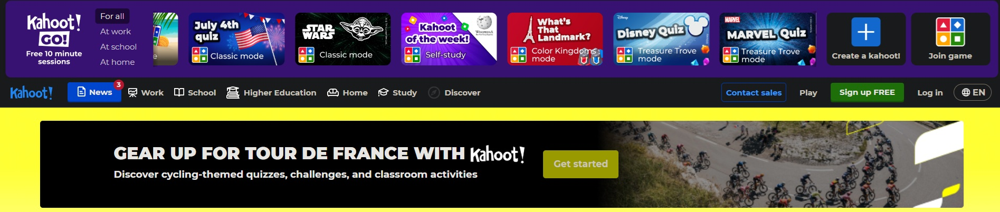

How to evaluate websites
In order to see if certain websites are appropriate for classroom application, we must best in mind the following criteria taken from Dudeney and Hockly's work (2008):
- Accuracy: Who wrote the page? Is it a credible source? Is the page content reliable and factually correct?
- Currency: Is the content up to date? Is it relevant to the topic? Is it presented in a clear and concise manner?
- Content: Is the site interesting and stimulating? Is it engaging and interactive? Is it well-organized and easy to navigate?
- Functionality: Does the site work well? Are there any technical issues? Does it have large files or high data payload? Is it free to use / paid service?
Sample unit of work using websites:
Unit title: Global Warming & Environmental Action
Level: B2 (Upper-Intermediate) ESL
Unit objectives: students will expand and accurately use key environment-related vocabulary such as “carbon footprint,” “greenhouse gases,” and “sustainability,” interpret and discuss graphs, charts, and data on climate change, formulate and defend opinions both orally and in writing about environmental issues, and finally create and present a personal or group digital action plan to reduce carbon footprints.
Next up, we have 7 potential web-resources that can be used within this unit.
1 - NASA Climate Change: Vital Signs of the Planet
NASA’s official site displays live CO₂, temperature and ice-sheet data in clear charts. Chosen for its expert‐verified, up-to-date information, it exemplifies the accuracy and currency criteria—“Who wrote the page? Is this person an expert… Is the page content reliable and factually correct?” (Dudeney & Hockly, 2008, p. 33).
Therefore, we can rest assured that the accuracy, content and functionality criteria are met. NASA is a reputable source, the data is current and relevant, and the site is well-organized with no technical issues. As for content, the interactive graphs allow students to explore data visually, making it suitable for both individual and group activities in an interesting fashion.
NASA. (2025). (Click here to access!)
2 - TED-Ed: “Climate change: Earth’s giant game of Tetris”
The video uses the metaphor of Tetris to explain the carbon cycle, fossil fuel buildup, and the consequences of CO₂ overload in a way that’s both accessible and visually engaging.
It is ideal for introducing the science behind climate change in a classroom-friendly format as it aligns with Dudeney and Hockly’s (2008) emphasis on using “authentic sites… with smaller chunks of text per page” and multimedia that supports comprehension across levels. The animation, narration, and embedded quiz make it suitable for both presentation and guided listening tasks
The content criteria is met as the video is engaging and interactive, with a clear and concise presentation of the topic. The functionality criteria is also met as the video is well-produced, with no technical issues, and can be easily accessed on multiple devices. The currency criteria is also met, as the video was published in 2016 and is still relevant to the topic of climate change today.
Lastly, we can consider the content to be accurate, as TED-ED has verified the source of the video and the information presented is factually correct.
TED-Ed. (n.d.). Climate change: Earth’s giant game of Tetris [Video].(Click here to access!)
3 - Gapminder Tools

Gapminder presents data as dynamic bubble and scatter plots where students can chart CO₂ emissions against GDP, apply time-lapse playback, filter by country and download visuals for reports. It encourages exploration of long-term trends and cross-national comparisons
Gapminder is a very powerful website that demands learners tomake decisions and actively process language and content rather than passively consume it (Dudeney & Hockly, 2008, p. 42), perfect for guided analysis and reporting.
The website is incredibly accurate and up-to-date, as the data is taken is incredibly precise and taken from external official sources. As a fan of charts and data visualization, I can vouch for the content criteria, as well as the very neatly organization of the functionality aspects of the website.
Gapminder. (2025). (Click here to access!)
4 - BBC News: Climate Change Section
The BBC’s climate portal aggregates short, topical articles, infographics and embedded videos on environmental policy and scientific findings. It features filters for region and topic, social-sharing buttons for classroom debate, and optional audio summaries to support different proficiencies.
Authentic texts here achieve a balance between authenticity and "real-world look and feel" (Dudeney & Hockly, 2008, p. 44), making them ideal for contrastive reading and fulfilling the content criteria.
The accuracy and currency criteria is met as the BBC is a reputable source, the content is current and relevant, and the site is well-organized with no technical issues. The functionality criteria is also met, as the site is easy to navigate and can be accessed on multiple devices.
Finally, the content criteria is met as the articles are engaging and interactive, with a clear and concise presentation of the topic.
BBC News. (2025). (Click here to access!)
5 - Global Footprint Network: Personal Footprint Calculator

With a very soft design and smooth animations, the GFN allows, through a brief survey on energy use, diet and travel habits, to compute each student`s ecological footprint, then displays personalized charts comparing national and global averages. It exemplifies the principle that learners should input their own data and reflect on outcomes, linking language practice to personal relevance and taking advantage of the opportunities of Web 2.0.
Functionality is well adjusted via the use of elements such as slides, smooth transitions and very intuitive and simple navigation. Content is neatly organized, and very attractive to the users as it includes a lot of visual elements that are appealing on sight.
Finally, the accuracy and currency criteria is met as the GFN is project initiated in the `90s as part of the University of Columbia's sustainability program. Nowadays, it is administered under the governance of the Footprint Data Foundation (FoDaFo).
Global Footprint Network. (2020) (Click here to access!)
6 - Kahoot!: Climate Vocabulary Quiz

Vocabulary quizzes are a very useful Web 2.0 tool that can be used to reinforce key terms and concepts. Teachers can even use this resource's innate quirk of competition for a fully-interactive and engaging vocabulary task.
"More often than not, they are group activities and, as a result, lend themselves to communication and the sharing of knowledge, two principal goals of language teaching itself." (Dudeney & Hockly, 2008, p. 44).
The most lacking aspect of this resource is the accuracy criteria, as the quizzes are user-generated and may not always be factually correct. However, the content and functionality criteria are met, as the quizzes are engaging and interactive, with a clear and concise presentation of the topic. The currency criteria is also met, as the quizzes can be easily updated to reflect current events and trends.
Kahoot! (2025). (Click here to access!)
7 - Google Earth Engine: Timelapse (Any past date – Present)

Want to show students real-world footage of environmental change? Google Earth Engine's Timelapse feature allows you to view satellite imagery from any point in the past up to the present, providing a powerful visual tool for discussing deforestation, urbanization, and climate change impacts.- This tool animates decades of satellite imagery, making environmental change visible. It offers “non-linguistic data which is easy to interpret” (Dudeney & Hockly, 2008, p. 39), perfect for vocabulary brainstorming and cause-and-effect discussions.
As the source is no other than Google itself, we can trust that the accuracy is fulfilled. Also, because of the nature of the resource and its precise satelite imagery, the curency criteria is met. The website works really well, albeit the high data payload may require for a sturdy internet connection. Alas, content is satisfied as well since the website can be considered interesting and stimulating.
Google Earth Engine. (2025). Timelapse (1984–Present). (Click here to access!)
References
- BBC News. (2025). Climate change. https://www.bbc.com/news/science_and_environment
- Dudeney, G., & Hockly, N. (2008). How to teach English with technology. Pearson Education Limited.
- Gapminder. (2025). Gapminder tools. https://www.gapminder.org/tools/
- Global Footprint Network. (2020). Personal footprint calculator. https://www.footprintcalculator.org/
- Google Earth Engine. (2025). Timelapse (1984 till Present). https://earthengine.google.com/timelapse/
- Kahoot!. (2025). https://kahoot.com/
- NASA. (2025). NASA climate change: Vital signs of the planet. https://climate.nasa.gov/vital-signs/
- TED-Ed. (n.d.). Climate change: Earth`s giant game of Tetris [Video]. https://ed.ted.com/lessons/climate-change-earth-s-giant-game-of-tetris-joss-fong